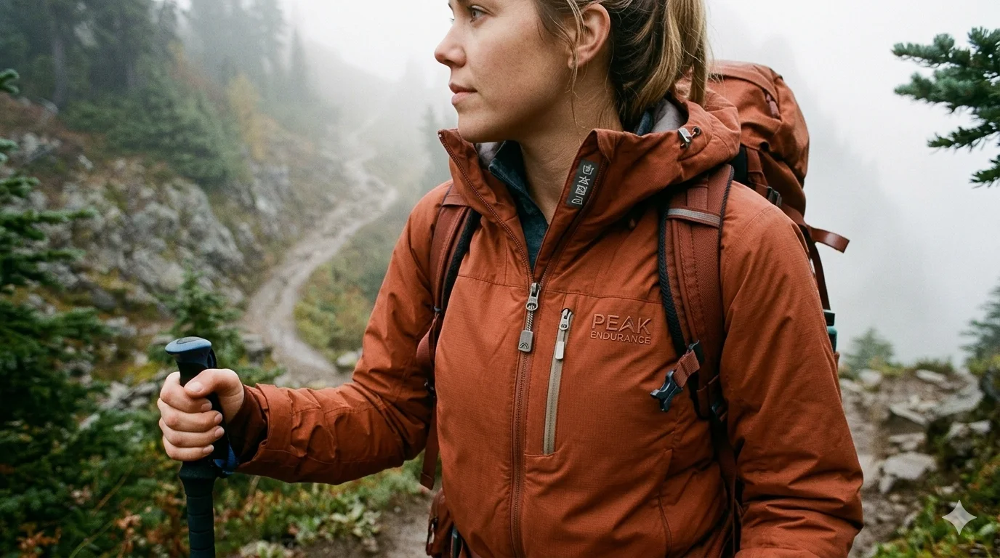
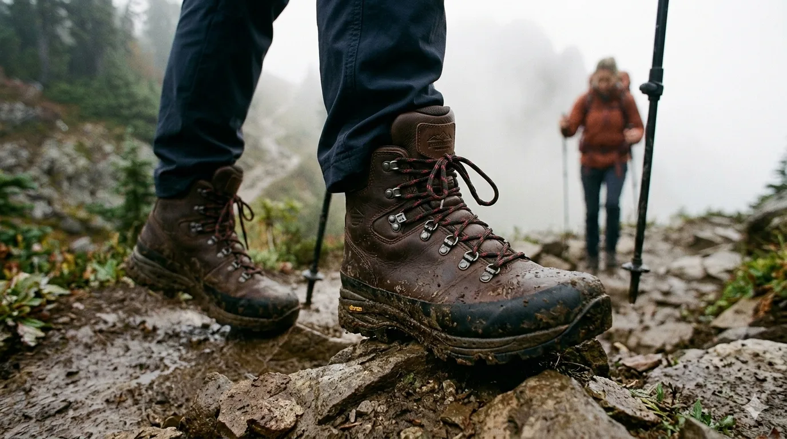
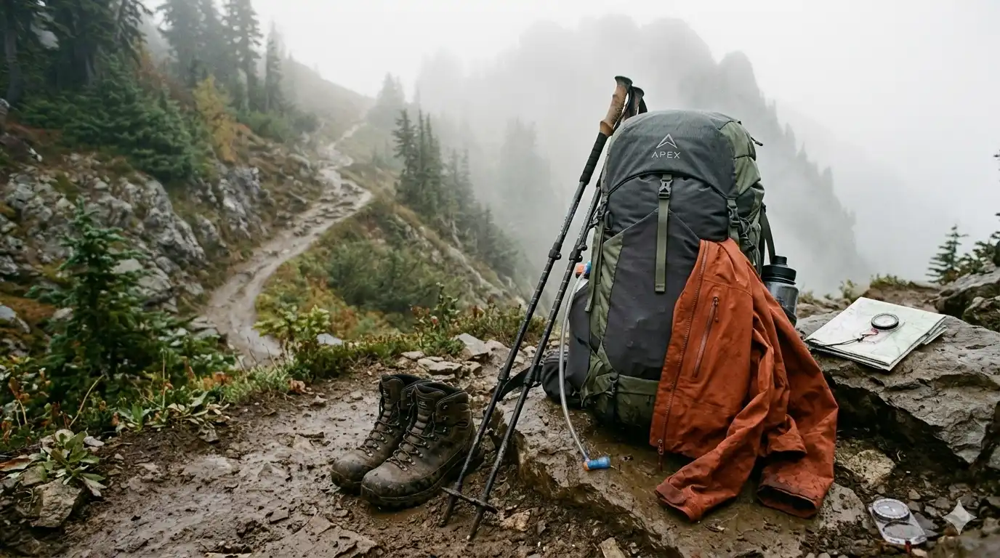
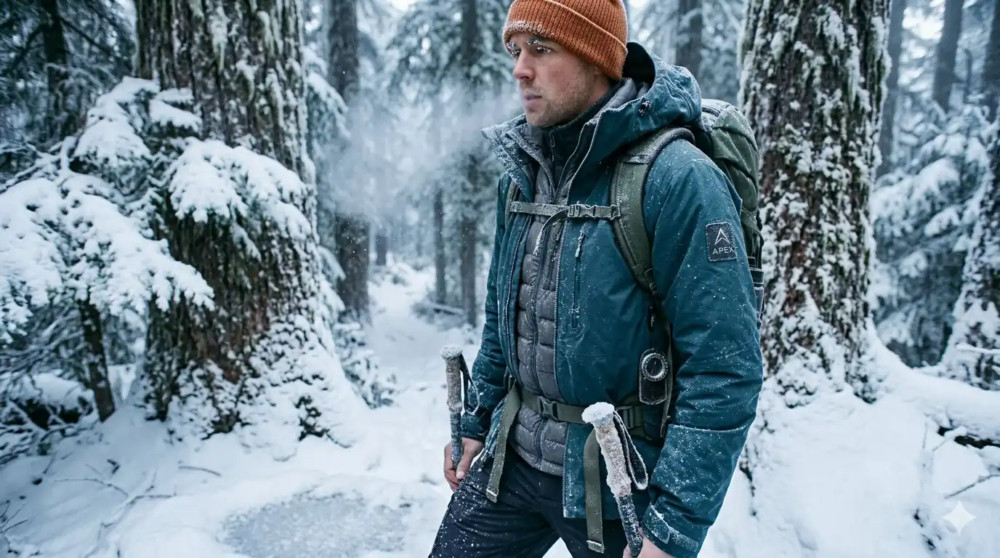
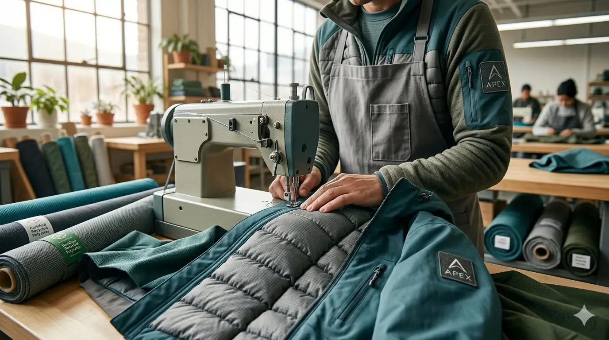

Outerwear
Apex Shell Jacket
Three-layer construction. Fully seam-sealed. Packs into its own chest pocket. The jacket you grab without thinking.

Spring / Summer 2026
Technical gear for people who go further.
Shop the CollectionTested on the Gatineau Hills. Ready for anywhere.

Three-layer construction. Fully seam-sealed. Packs into its own chest pocket. The jacket you grab without thinking.

Full-grain leather upper. Vibram outsole. Waterproof membrane. Broken in after 10km, reliable for the next 1,000.
Dispatches from the field.

We took the full Apex kit north of Kingston for a five-day loop. Here's what surprised us, what didn't, and what we'd do differently.
Read more →
Minus 20 and clear skies. The Gatineau Hills in February are brutal and beautiful. Your layering system makes or breaks the day.
Read more →
Three years ago we started over. We'll tell you exactly why — and what it cost us to do the right thing.
Read more →